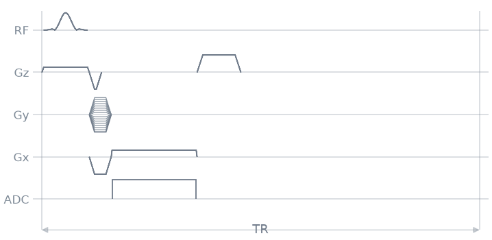
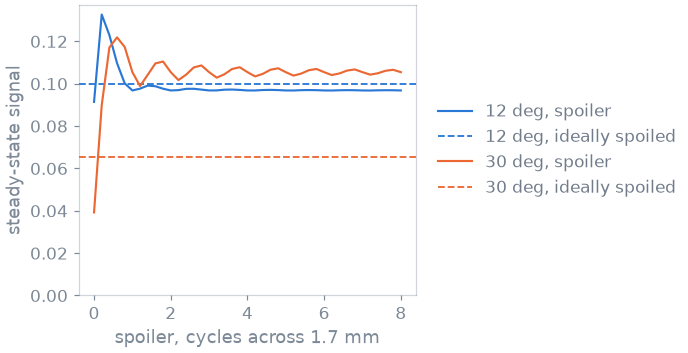
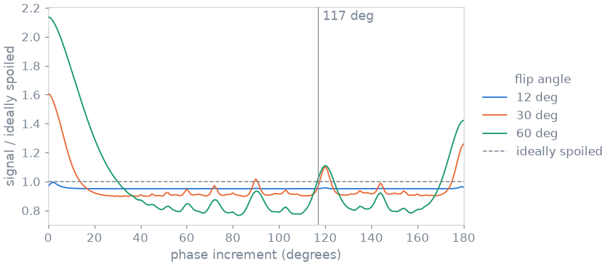
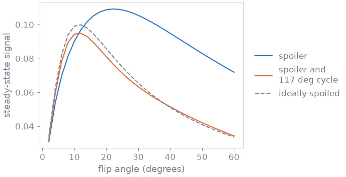

Note
Go to the end to download the full example code.
3. Spoiling#
With a TR of 20 ms and a T2 of tens of milliseconds, your gradient echo still has transverse magnetisation when the next pulse arrives. That pulse refocuses part of it, and the leftover from one repetition adds to the signal of the next: after a few hundred repetitions the signal settles into a steady state that depends on T2 as well as on T1 and the flip angle. A spoiled gradient echo removes that leftover, so the steady state is the simple one that every T1-weighted protocol assumes.
In this lesson you spoil your sequence in two steps: first with a spoiler gradient, then by cycling the phase of the RF pulse. After each step you compare the signal with the ideally spoiled one.
Learning objectives
Add a spoiler gradient, prescribed by how many cycles it winds across a voxel.
Understand why a spoiler alone does not reach the ideally spoiled signal.
Cycle the phase of the RF pulse and of the ADC from one repetition to the next, and read the phases back from the sequence.
Choose a phase increment, and know why 117 degrees is the common one.
Previous: 2. Echo and repetition time. Next: 4. Labels and metadata, where you tell the reconstruction what each readout is.
Events#
The scanner, the protocol, the readout and the phase encoding of the previous lessons:
import numpy as np
import pypulseqpp as pp
system = pp.Opts(
max_grad=32.0,
grad_unit="mT/m",
max_slew=130.0,
slew_unit="T/m/s",
rf_dead_time=100e-6,
rf_ringdown_time=20e-6,
adc_dead_time=10e-6,
)
FOV = 220e-3
MATRIX = 128
THICKNESS = 5e-3
FLIP_ANGLE_DEG = 12.0
TR = 20e-3
delta_k = 1 / FOV
dwell, readout_time = pp.calc_adc_timing(
MATRIX,
26e-6,
grad_raster_time=system.grad_raster_time,
adc_raster_time=system.adc_raster_time,
)
gx = pp.make_trapezoid(
"x", flat_area=MATRIX * delta_k, flat_time=readout_time, system=system
)
adc = pp.make_adc(MATRIX, dwell=dwell, delay=gx.rise_time, system=system)
gx_pre = pp.make_trapezoid("x", area=-gx.area / 2, duration=1e-3, system=system)
gy_pre = pp.make_trapezoid("y", area=MATRIX / 2 * delta_k, duration=1e-3, system=system)
phase_steps = np.arange(-MATRIX // 2, MATRIX // 2) / (MATRIX / 2)
Gradient spoiling#
A spoiler is a gradient played after the readout. It winds the phase of the
transverse magnetisation across each voxel, so that what is left integrates
to (nearly) nothing over the voxel. You prescribe it by what it does, the
number of cycles it winds across a voxel, and
make_crusher() returns the shortest gradient that does it.
Here the voxel is the in-plane pixel, 1.7 mm, and the spoiler winds 4 cycles
along z, where it does not disturb the k-space of the readout.
VOXEL = FOV / MATRIX
SPOILER_CYCLES = 4.0
spoiler = pp.make_crusher(SPOILER_CYCLES, VOXEL, channel="z", system=system)[0]
print(f"spoiler {1e3 * pp.calc_duration(spoiler):.2f} ms")
spoiler 2.00 ms
The spoiler takes time out of the TR delay. The repetition is now the pulse, the encoding, the readout, the spoiler and the delay.
RF phase#
The second tool is the phase of the RF pulse. Every RF and ADC event has a
phase_offset, in radians, which you can change from one repetition to
the next without designing a new event. RF spoiling advances the phase by
an increment that itself grows by \(\Delta\varphi\) every repetition:
The leftover magnetisation a pulse refocuses was created some repetitions earlier, and with this quadratic phase each earlier repetition comes back at a different phase, so their sum averages out. The ADC gets the same phase as the pulse, so the signal you want is not affected.
def rf_phase(repetition, increment_deg):
"""The phase of one repetition's pulse and ADC, in radians."""
return np.deg2rad(increment_deg) * repetition * (repetition + 1) / 2
Your spoiled gradient echo, as a function of the spoiler and of the phase increment, so you can compare them. With an increment of zero every phase is zero, and only the spoiler acts.
def spoiled_gre(cycles, increment_deg=0.0, flip_angle_deg=FLIP_ANGLE_DEG):
"""The gradient echo, with a spoiler and an RF phase cycle."""
rf, gz, gz_reph = pp.make_sinc_pulse(
flip_angle=np.deg2rad(flip_angle_deg),
duration=2e-3,
slice_thickness=THICKNESS,
apodization=0.5,
time_bw_product=4.0,
delay=system.rf_dead_time,
system=system,
use="excitation",
return_gz=True,
)
spoiler = pp.make_crusher(cycles, VOXEL, channel="z", system=system)[0]
played = (
pp.calc_duration(rf, gz)
+ pp.calc_duration(gx_pre, gy_pre, gz_reph)
+ pp.calc_duration(gx, adc)
+ pp.calc_duration(spoiler)
)
tr_delay = pp.make_delay(
pp.round_to_raster(TR - played, system.block_duration_raster)
)
seq = pp.Sequence(system)
for repetition, step in enumerate(phase_steps):
phase = rf_phase(repetition, increment_deg) % (2 * np.pi)
rf.phase_offset = phase
adc.phase_offset = phase
seq.add_block(rf, gz)
seq.add_block(gx_pre, pp.scale_grad(gy_pre, step), gz_reph)
seq.add_block(gx, adc)
seq.add_block(spoiler)
seq.add_block(tr_delay)
return seq
seq = spoiled_gre(SPOILER_CYCLES, increment_deg=117.0)
ok, errors = seq.check_timing()
print(f"timing ok: {ok}")
seq.paper_plot(tr=1)

timing ok: True
The phases are stored in the blocks, where the scanner and the reconstruction read them. The first six, read back from the sequence:
first_pulses = [seq.get_block(1 + 5 * n).rf for n in range(6)]
print([float(np.rad2deg(rf.phase_offset).round(1)) for rf in first_pulses])
[0.0, 117.0, 351.0, 342.0, 90.0, 315.0]
Steady-state signal#
To see what each tool does, you play the sequence on a voxel. The simulation below spreads 201 isochromats across one voxel and plays the repetition on them a few hundred times: the pulse at its phase, relaxation until the echo (where the signal is read with the ADC’s phase), relaxation until the end of the TR, and the spoiler, which winds each isochromat by its position. The echo time and TR are read from your sequence, so the simulation plays what you built. The ideally spoiled signal, the one with no leftover at all, is the closed form
The tissue has a T1 of 1000 ms and a T2 of 80 ms.
Gradient spoiling without RF spoiling#
First without the phase cycle, at your 12 degrees and at 30 degrees, for spoilers from nothing to 8 cycles across the voxel:
CYCLES = np.linspace(0.0, 8.0, 41)
SWEPT_FLIPS = (FLIP_ANGLE_DEG, 30.0)
against_area = {
flip: [abs(steady_state(cycles, 0.0, flip)[-1]) for cycles in CYCLES]
for flip in SWEPT_FLIPS
}

Below one cycle the voxel is not wound over the whole circle, and the signal depends on the spoiler. Past about three cycles it does not any more, but it settles above the ideally spoiled line: at 30 degrees, at more than one and a half times the signal you want. No spoiler area removes this.
The reason is that the spoiler winds every repetition by the same phase. The leftover a pulse refocuses has been wound and unwound by the same amount, and comes back coherent. That is what the phase cycle breaks.
Phase increment#
Now keep the 4-cycle spoiler and sweep the phase increment from 0 to 180 degrees, at three flip angles. The signal is divided by the ideally spoiled one, so 1 is perfect spoiling.
INCREMENTS = np.arange(0.0, 181.0, 1.0)
INCREMENT_FLIPS = (FLIP_ANGLE_DEG, 30.0, 60.0)
against_increment = {
flip: np.array(
[
abs(steady_state(SPOILER_CYCLES, step, flip, repetitions=500)[-1])
for step in INCREMENTS
]
)
/ ideally_spoiled(flip)
for flip in INCREMENT_FLIPS
}

12 deg: 0.951 of the ideal at 117 deg
30 deg: 0.967 of the ideal at 117 deg
60 deg: 1.020 of the ideal at 117 deg
The curve is spiky. An increment that brings the phase back to a few values, like 0 or 180 degrees, leaves the leftover as coherent as no cycle at all, and each flip angle has a few bad increments of its own. 117 degrees is within a few percent of the ideal at all three flip angles, which is why it is the common choice; its good neighbourhood is narrow.
Combined spoiling#
Last, the steady state against the flip angle, with the spoiler alone and with the spoiler and the 117 degree cycle:
FLIP_ANGLES = np.arange(2.0, 61.0, 2.0)
spoiler_only = [abs(steady_state(SPOILER_CYCLES, 0.0, f)[-1]) for f in FLIP_ANGLES]
rf_spoiled = [
abs(steady_state(SPOILER_CYCLES, 117.0, f, repetitions=500)[-1])
for f in FLIP_ANGLES
]

With the spoiler alone, the curve peaks far from the Ernst angle and is twice the ideal at large flip angles, by an amount that depends on T2. With the phase cycle it follows the ideally spoiled curve, and peaks back at the Ernst angle. A few percent remain, which depend on T2 and the flip angle: keep that in mind if you fit T1 from this signal with the ideal model.
Specification#
What this lesson built, stated the way you would ask an agent for it:
Add spoiling to the lesson-2 gradient echo: a z spoiler after the
readout made with make_crusher for 4 cycles across the in-plane pixel,
and RF spoiling with a 117 degree quadratic phase increment applied to
both the RF and the ADC phase_offset. Simulate the steady state with an
isochromat sum across one voxel (T1 1000 ms, T2 80 ms, TE and TR read
from the sequence), and plot it against the spoiler area, the phase
increment and the flip angle, next to the ideally spoiled signal.
Total running time of the script: (0 minutes 6.282 seconds)